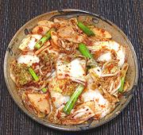

|
Cabbage Cut & Jumbled KimchiKorea - Paech'u Mak Kimchi | ||||
| Makes: Effort: Sched: DoAhead: |
2-1/2 # ** 5-1/+ hrs Yes |
This all season kimchi is very easy to make. It can be served immediately with a dash of vinegar, or fermented 3 to 4 days. If you make it to serve immediately you can skip the rice porridge. I made a batch of this and forgot it for about two weeks. It was just fine. | |||
|
2 6 2-1/2 5 5 1 3-1/2 3 2 2 4 3/4 |
# oz oz c cl in T T T T oz |
Napa Cabbage (1) Daikon (2) Sea Salt (3) Water Garlic Ginger Fish Sauce (4) Rice Porridge (5) Chili Flake (6) Chili Powder (6) Scallions Sea Salt (3) |
Make - (5-1/2 hrs - 25 min work + 2 to 4 days fermenting)
|